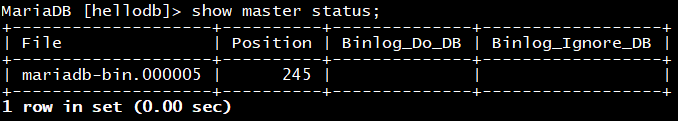

MySQL数据库中支持多种日志类型，通过分析日志，我们可以优化数据库性能，排除故障，甚至能够还原
数据，本节内容将带你了解MySQL数据库中的日志管理
一、事务日志
作用：
用来记录数据库更新情况的文件，它可以记录针对数据库的任何操作，并将记录的结果保存到独立的文件
中。对于每一次数据库更新的过程，事务日志文件都有非常全面的记录。根据这些记录可以恢复数据库更
新前的状态。
日志文件：
事务型存储引擎自行管理和使用，建议和数据文件分开存放
事务日志包括
Redo log 重做日志
Undo log 回滚日志
Redo记录的是已经全部完成的事务，就是执行了commit的事务，记录文件是：
ib_logfile0，ib_logfile1……
默认路径：
/var/lib/mysql/
相关变量：

日志管理：
调整事务日志文件大小及数量
服务器选项中指定
vim /etc/my.cnf
[mysqld]
innodb_log_file_size=10240000
innodb_log_files_in_group=5
注：调整事务日志数量后，必须将原有事务日志文件删除，否则服务无法重启成功
生产环境建议：
(1) 生产环境中一般根据具体情况将文件大小调大并增加日志文件数量
(2) 由于事务日志会重复交替覆盖，所以利用事务日志仅仅可以避免数据库突然崩溃，如掉电的情况，而不
可用做恢复数据用
二、错误日志
功能：
在MySQL数据库中，错误日志时默认开启的。用于记录MySQL 运行过程中较为严重的警告和错误信息，
以及MySQL每次启动和关闭的详细信息。
日志文件：
logerror=/PATH/TO/LOGERRORFILE
默认存放路径：/var/log/mariadb/mariadb.log
日志管理：
是否记录警告信息至错误日志文件
logwarnings=1|0 1表示开启，0表示关闭，默认值为1
生产环境建议：
数据库管理员可以删除很长时间之前的错误日志，以保证mysql服务器上的硬盘空间。
可使用重命名原来的错误日志文件，手动冲洗日志创建一个新的错误日志，方法如下：
[root@CentOS7 mysql]#mv mariadb.log mariadb.log.data
[root@CentOS7 mysql]#mysqladmin -pcentos flush-logs
三、通用日志
功能：
记录对数据库的通用操作，包括错误的SQL语句，MySQL数据库默认不启用通用日志
文件：file，默认值
表：table
日志相关设置：
日志管理：
general_log=ON|OFF
general_log_file=HOSTNAME.log
log_output=TABLE|FILE|NONE
optimize table testlog； 整理数据库，释放磁盘数据库碎片
生产环境建议：
由于通用日志在并发操作大的环境下会产生大量的信息从而导致不必要的磁盘IO，会影响mysql的性能。
如若不是为了调试数据库的目的建议不要开启查询日志。
四、慢查询日志
功能：
记录执行查询时长超出指定时长的操作，可以帮助我们定位性能问题。
日志文件：
/var/lib/mysql/Hostname-slow.log
日志管理：
log_slow_filter = admin,filesort,filesort_on_disk,full_join,
full_scan,query_cache,query_cache_miss,tmp_table,tmp_table_on_disk
上述查询类型且查询时长超过long_query_time，则记录日志
log_queries_not_using_indexes=ON 不使用索引或使用全索引扫描，不论是否达到慢查询阀值的语句是否
记录日志，默认OFF，即不记录,生产环境中可监控此项优化数据库环境
log_slow_rate_limit = 1 多少次查询才记录，mariadb特有
log_slow_verbosity= Query_plan,explain 记录内容
log_slow_queries = OFF 同slow_query_log 新版已废弃
生产环境建议：
通过慢查询日志，可以查找出哪些查询语句的执行效率很低，以便进行优化。一般建议开启，它对服务器
性能的影响微乎其微，但是可以记录mysql服务器上执行了很长时间的查询语句。
示例：模拟慢查询
打开慢查询日志：
五、二进制日志
作用：
主要用于记录修改数据或有可能引起数据改变的mysql语句，并且记录了语句发生时间、执行时长、操作
的数据等等。所以说通过二进制日志可以查询mysql数据库中进行了哪些变化，通过“重放”日志文件中的事
件来恢复数据副本。
日志文件的构成：
有两类文件
(1) 日志文件：mysql|mariadb-bin.文件名后缀，二进制格式
如： mysql-bin.000001
(2) 索引文件：mysql|mariadb-bin.index，文本格式
二进制日志记录有三种格式：
(1) 基于“语句”记录：statement，记录语句，默认模式
(2) 基于“行”记录：row，记录数据，日志量较大
(3) 混合模式：mixed, 让系统自行判定该基于哪种方式进行
相关变量：

sql_log_bin=ON|OFF：是否记录二进制日志，默认ON，需配合log_bin，支持动态修改
log_bin=/PATH/BIN_LOG_FILE：指定文件位置；默认OFF，表示不启用二进制日志功能，上述两
项都开启才可，不写路径默认在/var/lib/mysql目录下，生产中建议分开存放

两项都是ON**状态才开启二进制日志功能，缺一不可！**
binlog_format=STATEMENT|ROW|MIXED：二进制日志记录的格式，默认STATEMENT
max_binlog_size=1073741824：单个二进制日志文件的最大体积，到达最大值会自动滚动，默认为
1G 说明：文件达到上限时的大小未必为指定的精确值
sync_binlog=1|0：设定是否启动二进制日志即时同步磁盘功能，默认0，由操作系统负责同步日志到
磁盘
expire_logs_days=N：二进制日志可以自动删除的天数。 默认为0，即不自动删除
日志管理：
二进制日志相关配置
查看mariadb自行管理使用中的二进制日志文件列表，及大小
SHOW {BINARY | MASTER} LOGS
查看使用中的二进制日志文件
SHOW MASTER STATUS

查看二进制文件中的指定内容
SHOW BINLOG EVENTS [IN ‘log_name’] [FROM pos] [LIMIT [offset,] row_count]
show binlog events in ‘mysql-bin.000001′ from 6516 limit 2,3
清除指定二进制日志：
PURGE { BINARY | MASTER } LOGS
{ TO ‘log_name’ | BEFORE datetime_expr }
示例：
PURGE BINARY LOGS TO ‘mariadb-bin.000003’;删除3前日志
PURGE BINARY LOGS BEFORE ‘2017-01-23’;
PURGE BINARY LOGS BEFORE ‘2017-03-22 09:25:30’;
删除所有二进制日志，index文件重新记数
RESET MASTER [TO #]; 日志文件从#开始记数，默认从1开始，一般是
master第一次启动时执行，MariaDB10.1.6开始支持TO #
切换日志文件：
FLUSH LOGS;
二进制日志事件格式：
# at 328
#151105 16:31:40 server id 1 end_log_pos 431 Query thread_id=1 exec_time=0
error_code=0
use mydb/!/;
SET TIMESTAMP=1446712300/!/;
CREATE TABLE tb1 (id int, name char(30))
/!/;
事件发生的日期和时间：151105 16:31:40
事件发生的服务器标识：server id 1
事件的结束位置：end_log_pos 431
事件的类型：Query
事件发生时所在服务器执行此事件的线程的ID：thread_id=1
语句的时间戳与将其写入二进制文件中的时间差：exec_time=0
错误代码：error_code=0
事件内容：
GTID：Global Transaction ID，mysql5.6以mariadb10以上版本专属属性：GTID
生产环境建议：
(1) 强烈建议开启二进制日志功能！
(2) 强烈建议以基于“行”的格式记录二进制日志，条件不允许可采用混合模式
mysqlbinlog命令
功能：二进制日志的客户端命令工具
格式：mysqlbinlog [OPTIONS] log_file…
–start-position=# 指定开始位置
–stop-position=#
–start-datetime=
–stop-datetime=
时间格式：YYYY-MM-DD hh:mm:ss
–base64-output[=name]
示例：
mysqlbinlog –start-position=6787 –stop-position=7527 /var/lib/mysql/mariadb-bin.000003
mysqlbinlog –start-datetime=”2018-01-30 20:30:10″ –stopdatetime=”2018-01-30 20:35:22″ mariadb-bin.000003
mysqlbinlog –start-position=647 –stop-position=797 -v /data/mysqllogs/mysql-bin.000003
六、性能分析工具profile
功能：
用于跟踪执行过的sql语句的资源消耗信息，可以帮助查看sql语句的执行情况，可以在做性能分析或者问题
诊断的时候作为参考。
相关变量：
Profiling功能默认关闭，开启profiling：
MariaDB [hellodb]> set profiling=ON;
显示每条SQL语句所消耗的时间：
MariaDB [hellodb]> show profiles;
显示指定Query_id的SQL语句执行过程各阶段消耗的时间：
MariaDB [hellodb]> show profile for query 3;